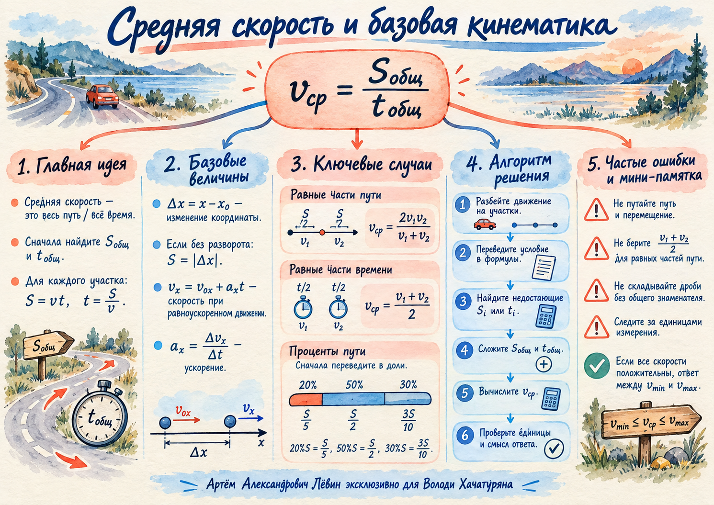

Равные части пути
S₁ = S₂ = S/2, поэтому времена различаются.
vср = 2v₁v₂ / (v₁ + v₂)
Для 5 км/ч и 10 км/ч: 20/3 км/ч ≈ 6,67 км/ч.
26 сентября 2026 · кинематика
Главная идея занятия: средняя путевая скорость всегда строится из полного пути и полного времени. Разные доли пути и времени дают разные способы вычисления этих двух величин.
Перед новой темой повторяем координату, скорость, ускорение, путь и три формы перемещения при равноускоренном движении.
Если направление на рассматриваемом промежутке не меняется, путь равен модулю изменения координаты. При развороте путь складывается по участкам.
Геометрический минимум: c² = a² + b²; L = 2πR = πD; половина окружности — πR; четверть — πR/2.
В этом занятии под средней скоростью понимается средняя путевая скорость: одна постоянная скорость, с которой тот же полный путь был бы пройден за то же полное время.
На каждом равномерном участке: Sᵢ = vᵢtᵢ и tᵢ = Sᵢ/vᵢ.
S₁ = 60·5 = 300 км, S₂ = 15·4 = 60 км.
Ответ: 40 км/ч.
Перед вычислениями определяем, какая величина разделена на части: путь, время или весь путь задан долями и процентами.
S₁ = S₂ = S/2, поэтому времена различаются.
vср = 2v₁v₂ / (v₁ + v₂)
Для 5 км/ч и 10 км/ч: 20/3 км/ч ≈ 6,67 км/ч.
t₁ = t₂ = T/2, поэтому средняя скорость становится средним арифметическим.
vср = (v₁ + v₂) / 2
Для 20 км/ч и 80 км/ч: 50 км/ч.
Sᵢ = pᵢS, tᵢ = pᵢS/vᵢ, сумма долей равна 1.
vср = 1 / (p₁/v₁ + … + pₙ/vₙ)
20%, 50%, 30% пути переводим в 0,2S; 0,5S; 0,3S.
20% пути — 10 м/с, 50% — 12 м/с, 30% — 15 м/с.
Проверка: 12,24 м/с находится между 10 м/с и 15 м/с.
Средняя скорость часто сводится к аккуратному делению дроби на число, сложению дробей, делению на дробь и сокращению только общих множителей.
| Действие | Правило | Пример из пособия |
|---|---|---|
| Дробь делим на число | A/B : c = A/(Bc) | S/2 : 5 = S/10 |
| Складываем дроби | A/B + C/D = (AD + BC)/(BD) | S/10 + S/20 = 3S/20 |
| Делим на дробь | A/B : C/D = AD/(BC) | 1/3 : 2/5 = 5/6 |
| Сокращаем | только общие множители | 5S/(10S) = 1/2 при S ≠ 0 |
Нельзя: сокращать слагаемые. В (S + 5)/S сокращения на S нет; в S(S + 5)/S общий множитель S сокращается при S ≠ 0.
Оно работает для равных промежутков времени, но не для равных половин пути.
При развороте путь складывается по участкам и остаётся неотрицательным.
Половина пути → S/2; две трети времени → 2T/3; 20% пути → 0,2S.
S/2 : 5 = S/10: число становится множителем знаменателя.
S/10 + S/20 = 3S/20.
Главная структура остаётся неизменной: весь путь делим на всё время.
Сокращаются общие множители при ненулевом сокращаемом выражении.
Перед сложением пути и времени должны быть приведены к согласованным единицам.
Ниже тот же алгоритм, что в блок-схеме пособия. Переключайте шаги и сверяйте логику решения.
ШАГ 1 ИЗ 6
| Дата | № | Ответ |
|---|---|---|
| 27.09 | 1 | 48 км/ч |
| 27.09 | 2 | 8 км/ч |
| 27.09 | 3 | 48 км/ч |
| 28.09 | 1 | 200/13 м/с ≈ 15,38 м/с |
| 28.09 | 2 | 50 км/ч |
| 28.09 | 3 | 10 м/с |

1. Первую половину пути тело движется со скоростью v₁, вторую — со скоростью v₂. Какая формула соответствует этому случаю?
2. Какая проверка подходит для положительных скоростей на всех участках?
Отмечено: 0 из 10.